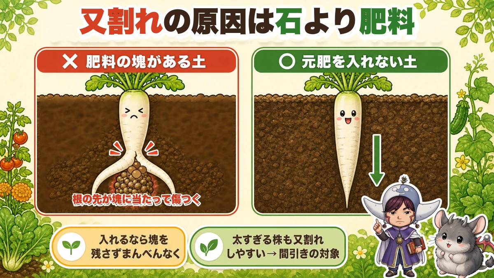
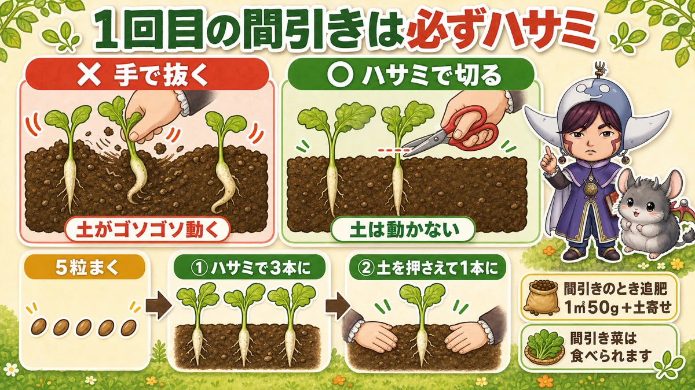
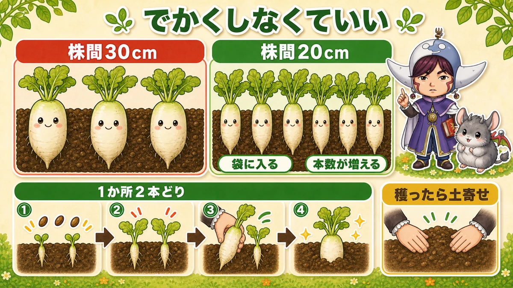
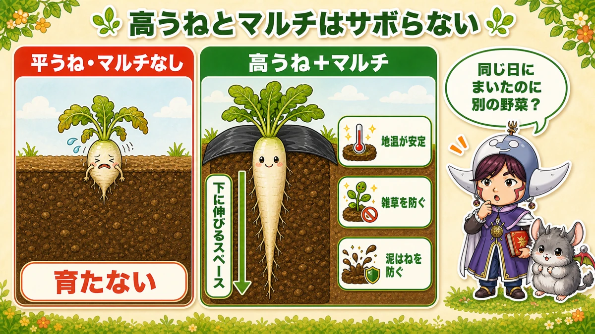
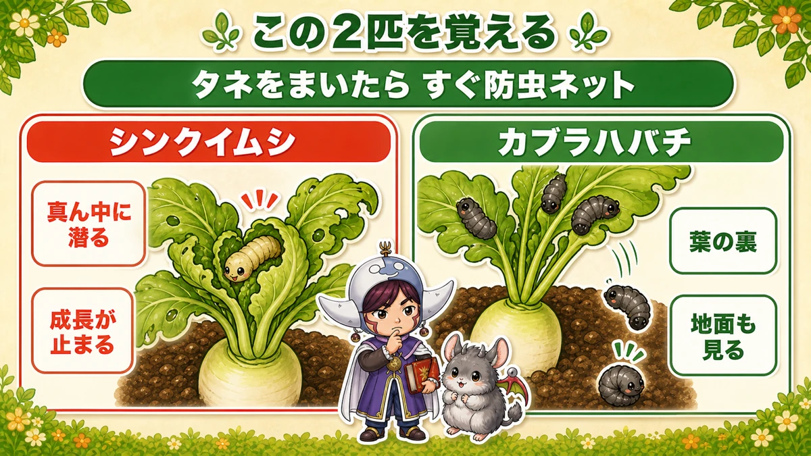
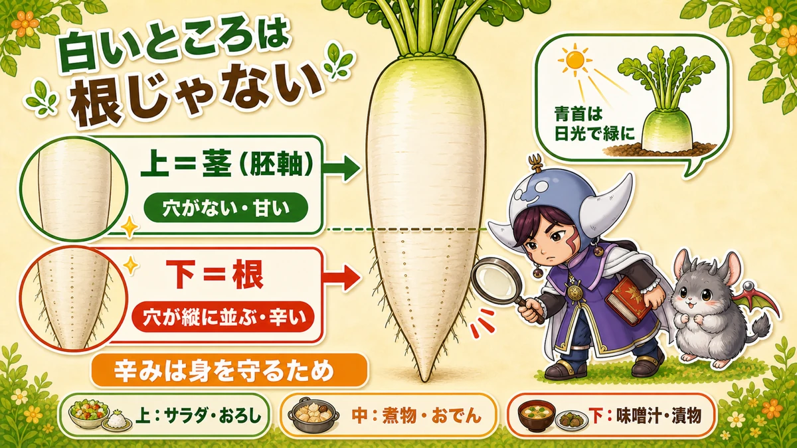

Forked radishes are caused by fertiliser, not stones 🥬 And thin them with scissors

🥬 "Mine always come out forked."
🥬 "I was told stones cause it, but my plot hasn't got any."
🥬 "They never thicken — thin and stringy and that's it."
Hello, I'm Eiko. Eight years of growing vegetables organically and without pesticides, and a teaching licence in science.
Today: daikon — the long white winter radish. The headline:
Forking isn't caused by stones. It's caused by fertiliser.
Surprised? So was I. I picked the stones out carefully one year and still got a perfect row of forked roots.
Once you know why, the fix is almost absurdly simple: don't feed the bed.
That, plus how you thin, is most of what decides a radish crop.
Choose the variety by days to maturity
What this diagram says （図解の文字）
- Choose the variety by when you're sowing
- "Autumn sowing is late August to mid-September" ／ "finish sowing by around 15–20 September"
- Variety ／ sowing window ／ characteristics — "the standard green-necked type. If in doubt, this one", "thick and long"
The key point: the thicker and longer the variety, the earlier it must go in, because it needs the time. Sow a long-season variety late and growth stops when the cold arrives and you finish with something half-sized.
- A standard type — reliable. If in doubt, this
- A thick, long type — needs the earliest sowing
- A short-season medium type (about two months) — for when you're running late. It also goes pithy later and holds its flavour
If you have room, the unusual ones are fun — round types that don't go long, purple-skinned and purple-fleshed types, small fast red ones. I grow a standard variety as the main crop and a purple one in whatever space is left. The look on a child's face when you cut it open pays for the row on its own.
Forking: the real cause

What this diagram says （図解の文字）
- Forking is caused by fertiliser more than by stones
- ✗ "soil with lumps of fertiliser in it" — "the root tip hits a lump and is damaged"
- ○ "soil with no base fertiliser" — "if you must add it, spread it evenly with no lumps"
- "An over-thick plant also forks readily → thin it out"
Why fertiliser splits a root
The growing tip of a radish root is extremely delicate.
As it extends, if it meets a lump of fertiliser or unrotted compost in the soil, it's damaged there — and the tip divides. That's what forking is.
Put the other way: with nothing in the way, the root goes straight down. It's only following gravity.
So: almost no base fertiliser
Some long-time organic growers add nothing at all — dig the bed well and sow. And they harvest thick, straight radishes.
If you must add something, work it through evenly with no lumps left. "A handful here" is the worst possible method.
I use ground that grew summer crops. The residue is about right — and it gives far straighter roots than starting with fresh fertiliser.
The other cause: an over-large plant
Counter-intuitively, keeping "the most impressive plant" when you thin can give you a forked root. An over-grown plant forks more often.
So: discard the conspicuously fat one and the feeble one, and keep a good middling plant.
Thinning decides everything

What this diagram says （図解の文字）
- The first thinning must be done with scissors
- ✗ "pulling by hand" — "the soil shifts" ／ ○ "cutting with scissors" — "the soil doesn't move"
- "Sow 5 seeds" → ① "scissors down to 3" → ② "press the soil and pull down to 1"
- "Feed when you thin — 50 g per m², then draw soil up"
Sowing
- Hole depth: a little deeper than your index finger to the second knuckle
- About 7 cm (3 in) across
- Five seeds per station (three is fine)
- Cover and press lightly
Radish seed dislikes light, so sown too shallow it germinates unevenly.
Cover with fleece to hold the moisture, and shade netting if it's still hot.
And: re-sow any station that didn't germinate, straight away. With modern heat, uneven germination is normal — plan to re-sow.
Thin by the number of true leaves, not by date
- 5 → 3 at one true leaf
- 3 → 2 at two or three true leaves
- 2 → 1 at five or six true leaves
Why not go straight to one
"If it's going to be one anyway…" — I thought that too. Two reasons to go in stages:
- With nothing to compare against, you can't tell whether the one you kept was the right one
- If pests take it, you have no replacement
Keeping two means a gap in the row doesn't happen. It's insurance.
First thinning: scissors, always
Underline this one. Don't pull them. Cut them with scissors.
The reason is simple: pulling shifts the soil, and that small movement pushes the root of the plant you're keeping so it grows with a kink in it — and that in turn causes forking.
The stump you leave behind breaks down and disappears, so don't worry about it.
My first year I pulled every one by hand. The whole row came out bent. They tasted the same; they were just sad to wash.
Second thinning: press the soil, then pull
By then you can pull — with one condition: press the soil down firmly first.
Afterwards, press the soil lightly back into contact — gently, so you don't bend the root.
If it's tangled with the one you're keeping, don't force it: use scissors.
If you can't decide which to keep
- Remove any with a missing or damaged seed leaf first
- For the final one, look at the growing point
A plant with a borer in its growing point must not be kept, however big it looks — it will not extend beyond that.
Feed when you thin
About 50 g per m² (1½ oz per yd²), then draw soil up lightly.
And don't throw the thinnings away — they're good eating, boiled or in soup.
You don't have to grow a big one

What this diagram says （図解の文字）
- You don't need to grow a big one
- 30 cm spacing ／ 20 cm spacing — "fits in the bag", "more plants"
- "Two per station" ／ "draw soil up after picking one"
20 cm spacing is fine
The usual spacing is 30 cm (12 in). At 20 cm (8 in) you still get good radishes — a bit slimmer, and much easier to fit in a fridge bag. An over-thick one won't go in, so you end up cutting and wrapping it.
And with closer spacing you fit more plants in, so the total harvest actually goes up.
Put the urge to grow an impressive one aside for a moment. You don't have to.
Two per station — a home-garden trick
Sow three seeds at 30 cm spacing and keep two instead of one.
They grow at different rates, so pick the bigger one first and leave the smaller — which then fattens up quickly.
You can't eat a whole row at once anyway, so a staggered harvest is a benefit.
Two points of technique:
- Space the seeds slightly apart rather than in one clump
- After picking one, draw soil over the hole — otherwise the remaining root is left exposed
Don't skimp on the ridge or the mulch

What this diagram says （図解の文字）
- Don't skimp on the high ridge and the mulch
- ✗ "flat bed, no mulch" — "doesn't grow"
- ○ "high ridge + mulch" — "room to go down", "stable soil temperature", "stops weeds", "stops soil splash"
- "Sown the same day — are you sure it's the same vegetable?"
I tried a flat bed with no mulch once, thinking it was closer to nature. They barely grew. Compared with the high-ridge, mulched block sown the same day, they looked like a different vegetable.
- Build a high ridge — room for the root to go down
- Lay mulch film — stable soil temperature, no weeds, no soil splash
Both of these work. Radishes start with the soil and the ridge.
Two pests to learn

What this diagram says （図解の文字）
- Learn these two — "net it as soon as you sow"
- The centre borer — "burrows into the middle", "growth stops"
- The turnip sawfly larva — "undersides of the leaves", "look at the ground too"
Radishes suffer less than cabbage or Chinese cabbage, but if you want clean ones without sprays, net them. Put the netting on as soon as you sow, and it can come off once they're large and the frosts arrive.
The centre borer
The worst of them — the caterpillar of a small moth. It burrows into the growing point, the very middle of the plant where new leaves come from.
The sign is the central leaves wilting and curling in on themselves. Open it gently and it's inside. Lose that and growth stops, so deal with it the moment you find it.
The sawfly larva
A dark larva on the undersides of leaves, with a habit: reach for it and it drops to the ground and escapes.
So don't look only at the leaf and assume it's gone. Check the soil at the base — it's usually curled up there.
How often to look
Without sprays, once every week or two is not enough. Early and on sight. That said, radishes are the easy end of the scale — nothing like Chinese cabbage.
Science bit: the white part isn't all root 🔬

What this diagram says （図解の文字）
- The white part isn't root
- Upper = stem (hypocotyl) — "no holes; sweet"
- Lower = root — "holes in vertical lines; hot"
- "The green neck is sunlight" ／ "the heat is self-defence"
- "Top: salad and grated. Middle: simmered dishes"
A good one to ask a child: "is the white part the root?"
The answer: the upper part is stem, the lower part is root.
Telling them apart is easy. Look at the holes the fine roots come out of:
- Holes in neat vertical lines = root
- No holes, smooth = stem (strictly, the hypocotyl)
And the upper part is sweeter, the lower part hotter.
Why? Because the pungency is a defence against being eaten. The root, defenceless underground, has the stronger guard. Sensible of it.
So you can cook by section:
- Top (sweet) — salad, and sweet grated radish
- Middle — simmered dishes; it takes flavour well
- Bottom (hot) — soup, pickles, grated as a condiment
Cut a thin slice from each end and taste them side by side. The difference is real — "it's the same radish!" A proper little experiment.
And the green neck? That part is above the soil and photosynthesising in the sun — the same reason a potato greens.
To sum up
- ✅ Forking is caused by fertiliser lumps, not stones
- ✅ Add almost no base fertiliser; if you must, spread it evenly with no lumps
- ✅ An over-large plant forks too. Keep a good middling one
- ✅ Sow direct — transplanting distorts them
- ✅ Sow deep enough — the seed dislikes light
- ✅ Thin by true-leaf count: 5→3→2→1, in stages
- ✅ First thinning with scissors, always. Pulling shifts the soil and bends the keeper
- ✅ Feed 50 g per m² when you thin, and eat the thinnings
- ✅ 20 cm spacing is fine — more plants, and they fit in the fridge
- ✅ Two per station staggers the harvest — but watch the airflow
- ✅ High ridge and mulch film both matter
- ✅ Net as soon as you sow. Learn the centre borer and the sawfly larva
- ✅ Upper = stem and sweet; lower = root and hot
You don't have to do all of it. This year, do the first thinning with scissors instead of your fingers. That one change straightens the row 🥬
Thank you for reading!